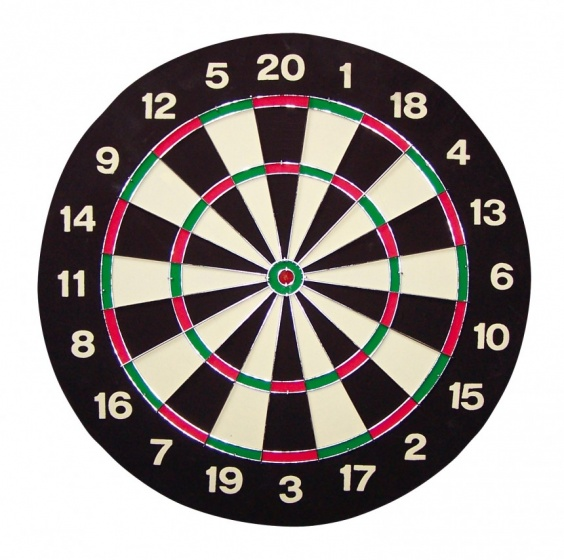
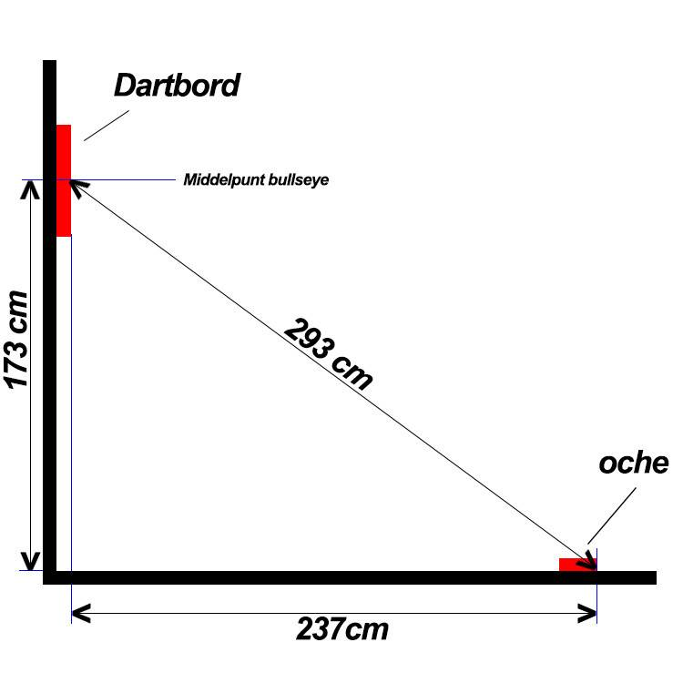

een dartbord dien je op een vooraf bepaalde hoogte op te hangen. De dartbord hoogte meet je vanaf het midden van de bullseye.
Volgens de officiële richtlijnen moet de bullseye op 1,73 meter van de grond hangen.
De oche is het begin van de mat, waarvandaan je je worp naar het bord maakt. Deze oche moet horizontaal 237 cm van de bullseye af zijn.

terug naar waar je vandaan kwam